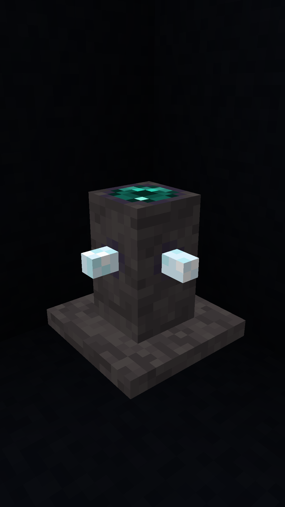
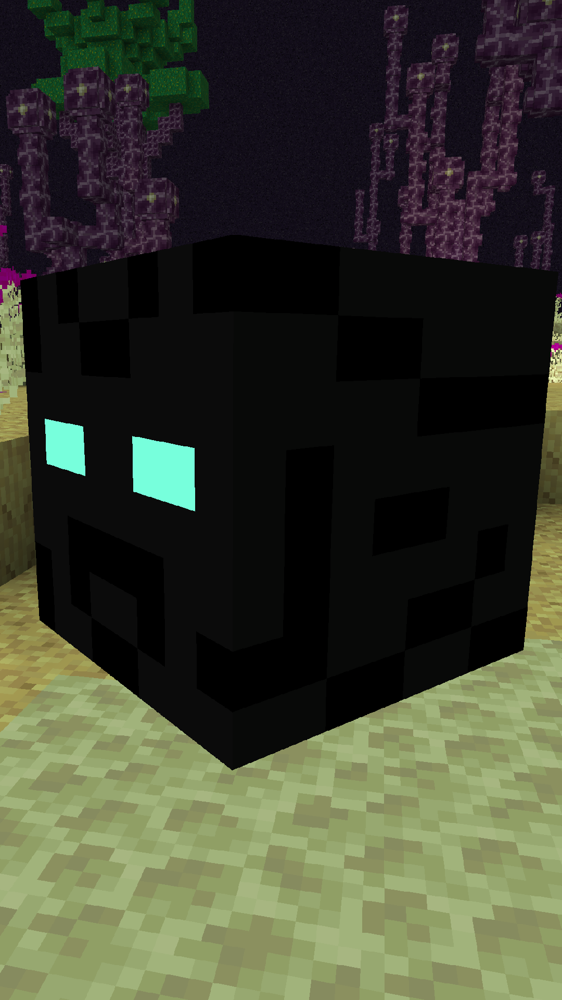
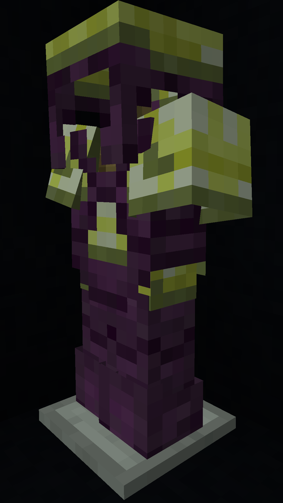
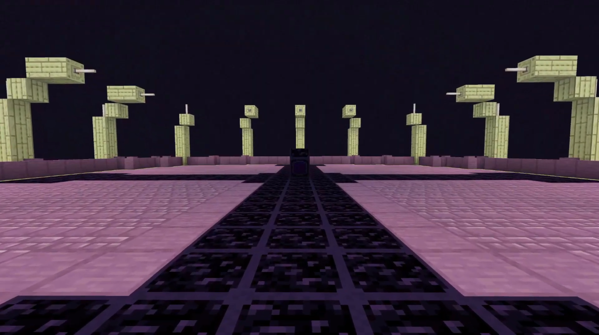

The End has changed. Now containing fully new and dangerous enviroment. Get through the weirdness and do not touch the void at any cost.

Is it hard to get around? Craft yourself a pearl cannon, it will teleport you high into skies and you can easily glid to the next island!
"This feeling, like I am beeing watched." The End is full of dangerous creatures. Watchlings might seem like regular brutes, but they are really strong and they are able to teleport. They can be stunned by large ammount of damage. The essence they drop is a tasty and regenerating treat.
Void Cubes are powerfull foes and you should never underestimate them. They may seem slow, but DO NOT let them bite you, it will hurt... a lot. They also can change flow of gravity in nearbye creatures, pulling them up and then inverting gravity back to smash them on the ground. They drop void roe, but more on that later.
Snarelings are a lot smarter than Watchlings, although they can be stunned too. When attacking they shoot sticky yellow liquid. They try to escape by teleporting once hurt, although they cannot once they are low on hp. They drop a blob of their yellow liquid which is a great as a fuel and excellent as light source.
Endmetal is a new powerfull material you can make gear out of (tools included). Simply combine void roe and seed from novis orchis (large green flowers). Endmetal draws the energy of the dimension to deal more damage to its inhabitants. You will also get greater defense against any endermen related entities.
Many more things were added too. For example End was made the way so you can even begin your game in it and progress all the way to best gear.

Ender Pylons are newest way of transport. Build 2 of them and connect them using Ender Codex to estabilish portal. These Pylons have limit of 50 blocks, but you can chain them together and they are really cheap to make.
But how do you get Ender Codex? Well, try to find the End Refinery, once you do, you will know what to do... Cognitio Teleportation
